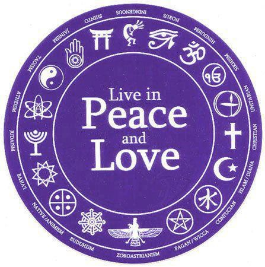

Ο Χριστιανισμός μέσα από τις Γραφές του
Διάρκεια = 4 εβδομάδες | Κόστος = 130$

Ο Χριστιανισμός είναι μια παγκόσμια θρησκεία. Από το μέτριο ξεκίνημά του πριν από 2.000 χρόνια, έχει αυξηθεί για να καλύπτει σχεδόν το ένα τρίτο του ανθρώπινου πληθυσμού.
Διαφορετικοί σε γλώσσες, πολιτισμούς, ιστορίες και θρησκείες, οι Χριστιανοί μοιράζονται ωστόσο μια κοινή συλλογή ιερών γραφών που ονομάζεται Βίβλος.Αυτό το μάθημα θρησκευτικών σας εισάγει στη Βίβλο και τη γραφή της και θέτει τις ερωτήσεις:
-
Πώς έχουν εφαρμόσει οι Χριστιανοί τις ιστορίες και τις διδασκαλίες τους;
-
Ποια είναι τα περιεχόμενα, οι γλώσσες και οι μορφές των Βίβλων σε διάφορους χρόνους και τόπους;
-
Πώς αντικατοπτρίζει η χριστιανική ιστορία τις αμφισβητούμενες και ποικίλες χρήσεις της γραφής – στον αρχαίο ρωμαϊκό κόσμο όπου ξεκίνησε ο Χριστιανισμός, στη
διάδοσή του μέσω της ευρωπαϊκής και αμερικανικής αποικιοκρατίας, στις διαφορετικές μορφές που παίρνει σε διάφορες τοποθεσίες σε όλο τον κόσμο;
Τι θα μάθεις στο συγκεκριμένο μάθημα.
-
Τι υπάρχει στη Βίβλο, το βιβλίο που περιέχει τις ιερές γραφές των Χριστιανών.
-
Μια επισκόπηση των περιεχομένων με έμφαση σε ποικίλες ερμηνείες γνωστών αποσπασμάτων.
-
Διερεύνηση επιλεγμένων θεμάτων, όπως ο τρόπος με τον οποίο οι Χριστιανοί προσεγγίζουν τη διαφορετικότητα, οι στάσεις απέναντι στις μη χριστιανικές παραδόσεις,
τα υπαρξιακά ζητήματα του πόνου και της βίας, η συνάντηση με τη σύγχρονη επιστήμη, οι ρόλοι των γυναικών, ο λειτουργικός χρόνος και το προσκύνημα.
Link για τα μαθήματα!
Θρησκεία, σύγκρουση και ειρήνη
Διάρκεια = 8 εβδομάδες | Κόστος = ΔΩΡΕΑΝ

Σε αυτό το μάθημα, θα εξερευνήσουμε μια σειρά από σύγχρονες συγκρούσεις σε διάφορες περιοχές του κόσμου με ιδιαίτερη έμφαση στον εντοπισμό και την ανάλυση των
διαφορετικών και περίπλοκων ρόλων που διαδραματίζουν οι θρησκείες τόσο στην προώθηση όσο και στον μετριασμό της βίας σε κάθε πλαίσιο. Οι μαθητές θα μάθουν μια μέθοδο
για την αναγνώριση και ανάλυση του τρόπου με τον οποίο οι θρησκευτικές ιδεολογίες είναι ενσωματωμένες σε όλους τους τομείς της ανθρώπινης δράσης και δεν απομονώνονται
από την πολιτική, οικονομική και πολιτιστική ζωή, όπως συχνά υποτίθεται.Εκτός από την εξέταση των ίδιων των συγκρούσεων, θα διερευνήσουμε επίσης τις θρησκευτικές διαστάσεις
των επιπτώσεων που έχουν αυτές οι συγκρούσεις στη ζωή των πολιτών σε τομείς όπως η δημόσια υγεία και η εκπαίδευση.
Τι θα μάθεις στο συγκεκριμένο μάθημα.
-
Εργαλεία για τον τρόπο ερμηνείας των ρόλων που παίζουν οι θρησκείες στις σύγχρονες συγκρούσεις.
-
Πώς οι θρησκείες είναι εσωτερικά διαφορετικές;
-
Πώς οι θρησκείες είναι ενσωματωμένες σε όλους τους ανθρώπινους πολιτισμούς.
Link για τα μαθήματα!
Φιλοσοφία και Κριτική Σκέψη
Διάρκεια = 6 εβδομάδες | Κόστος = 50$

Κριτική Σκέψη είναι η νοητική και συναισθηματική λειτουργία κατά την οποία το άτομο αξιολογεί την αξιοπιστία των πληροφοριών και αποφασίζει τι να σκεφτεί ή τι να κάνει
μέσω συλλογισμών που γίνονται με βάση όλα τα δυνατά στοιχεία που μπορεί να έχει στη διάθεσή του. Τι μπορούμε να μάθουμε μέσω της φιλοσοφικής έρευνας που θα μας βοηθήσει να σκεφτόμαστε με σαφήνεια, αυστηρότητα και χιούμορ για πράγματα που έχουν σημασία; Αυτό το
μάθημα εισάγει αρχές της φιλοσοφικής έρευνας και της κριτικής σκέψης που θα μας βοηθήσουν να απαντήσουμε σε αυτό το ερώτημα. Μάθετε πώς μπορούμε να χρησιμοποιήσουμε
φιλοσοφικές ιδέες για να σκεφτούμε τον εαυτό μας και τον κόσμο γύρω μας. Σε αυτό το μάθημα θα βελτιώσετε την ικανότητά σας να εντοπίζετε, να αναλύετε και να αξιολογείτε επιχειρήματα άλλων ανθρώπων.
Τι θα μάθεις στο συγκεκριμένο μάθημα.
-
Πώς να σκέφτεστε με σαφήνεια και αυστηρότητα
-
Πώς να εντοπίσετε, να αναλύσετε και να δημιουργήσετε πειστικά επιχειρήματα
-
Πώς να σκεφτείτε λύσεις στα κεντρικά προβλήματα της φιλοσοφίας
Link για τα μαθήματα!
Δικαιοσύνη
Διάρκεια = 12 εβδομάδες | Κόστος = 180$
Η δικαιοσύνη είναι η νομική ή φιλοσοφική θεωρία με την οποία εφαρμόζεται το Δίκαιο. Με τον ίδιο όρο επίσης χαρακτηρίζεται και η απονομή του δικαίου ως και το σύνολο της
δικαστικής εξουσίας, ή ακόμα και η εποπτεύουσα Αρχή αυτής π.χ. το Υπουργείο Δικαιοσύνης. Τα θέματα που θα συζητήσουμε στο μάθημα ειναι η θετική δράση, κατανομή
εισοδήματος, γάμους ομοφυλόφιλων, ο ρόλος των αγορών, συζητήσεις για δικαιώματα (ανθρώπινα δικαιώματα και δικαιώματα ιδιοκτησίας), επιχειρήματα υπέρ και κατά της
ισότητας, διλήμματα πίστης στη δημόσια και ιδιωτική ζωή. Το μάθημα καλεί τους εκπαιδευόμενους να υποβάλουν τις δικές τους απόψεις σχετικά με αυτές τις αντιπαραθέσεις
σε κριτική εξέταση.
Τι θα μάθεις στο συγκεκριμένο μάθημα.
-
Τα θεμελιώδη στοιχεία της πολιτικής φιλοσοφίας
-
Κατανόηση της κοινωνικής δικαιοσύνης και της ποινικής δικαιοσύνης και των ρόλων που διαδραματίζουν στο σύγχρονο σύστημα δικαιοσύνης
-
Μια βαθύτερη αίσθηση της φιλοσοφίας που βασίζεται σε σύγχρονα ζητήματα όπως η θετική δράση, ο γάμος του ίδιου φύλου και η ισότητα
Link για τα μαθήματα!